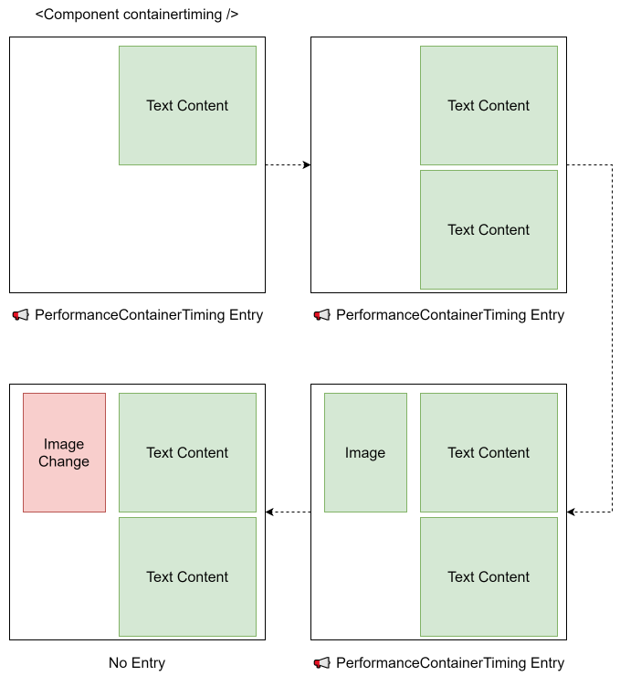

1. Introduction
The Container Timing API enables monitoring when annotated sections of the DOM are displayed on screen and have finished their initial paint. A developer can mark subsections of the DOM with the containertiming attribute (similar to elementtiming for the Element Timing API) and receive performance entries when that section has been painted for the first time.
This API allows developers to measure the timing of various components in their pages. As developers increasingly organize their applications into components, there’s a growing demand to measure performance on subsections of an application or a web page.
Unlike Element Timing, it is not possible for the renderer to know when a section of the DOM has finished painting (there could be future changes, asynchronous requests for new images, slow loading buttons, etc.), so this API emits candidates in the form of PerformanceEntry objects when there has been an update.
2. Motivation
Developers want to measure when subsections of the DOM have been painted, such as tables, widgets, or other components, so they can track paint times and submit them to analytics. Current Web APIs don’t adequately support this:
-
Element Timing is limited in what it can support and cannot be used for whole sections.
-
Largest Contentful Paint (LCP) isn’t useful enough to time when specific parts of the page have loaded.
-
User-space polyfills have significant drawbacks, such as:
-
Needing to mark elements before painting (requiring server-side changes or blocking rendering)
-
Requiring a MutationObserver to catch newly injected elements
-
Needing to run in the document head, increasing time to first paint
-
Can be less efficient at rectangle tracking compared to browser built-in 2D engines
-
Web authors know their domain better than anyone else and want to communicate the performance of their own content blocks in ways their users or organization would understand (e.g., "time to first tweet").
2.1. Life Cycle
In this example life cycle a component will paint multiple pieces of content at different times, each of these times will generate a newPerformanceContainerTiming entry with updated information.
However, once a region has been painted, subsequent paints of that same region will not generate new entries. 
3. Usage Example
The following example demonstrates how to register a container root and observe its paint timings.
containertiming attribute:
< div containertiming = "foobar" > < main > ...</ main > < aside > ...</ aside > </ div > < script > const observer= new PerformanceObserver(( list) => { let perfEntries= list. getEntries(); for ( const entryof perfEntries) { console. log( 'Container painted:' , entry. identifier, 'at' , entry. startTime, 'size:' , entry. size); } }); observer. observe({ entryTypes: [ "container" ] }); </ script >
The attribute should be set before the element is added to the document (in HTML, or if set in JavaScript, before adding it to the document). Setting the attribute retroactively will only capture subsequent events and future paints.
3.1. Ignoring Subtrees
containertiming-ignore> attribute:
< div containertiming = "foobar" > < main > ...</ main > <!-- Aside updates won't trigger container timing events --> < aside containertiming-ignore > ...</ aside > </ div >
4. Terminology
A container root is an Element that has the containertiming attribute.
An ignored subtree is a subtree rooted at an Element with the containertiming-ignore> attribute.
A painted region is a region (collection of rectangles) representing all the painted portions of a container root accumulated since it was first observed.
The container timing API provides timing information about when container roots are painted to the screen.
5. The PerformanceContainerTiming Interface
[Exposed =Window ]interface :PerformanceContainerTiming PerformanceEntry {readonly attribute DOMString identifier ;readonly attribute DOMRectReadOnly intersectionRect ;readonly attribute unsigned long long size ;readonly attribute DOMHighResTimeStamp firstRenderTime ;readonly attribute Element ?lastPaintedElement ;readonly attribute Element ?rootElement ; };PerformanceContainerTiming includes PaintTimingMixin ;
PerformanceContainerTiming object has these associated concepts:
-
An identifier initially set to an empty string.
-
An intersectionRect initially set to a
DOMRectReadOnlywith all values set to 0. -
A size initially set to 0.
-
A firstRenderTime initially set to 0.
-
A renderTime initially set to 0.
-
A lastPaintedElement containing the associated
Element, initially set tonull. -
A rootElement containing the associated
Elementthat is the container root, initially set tonull.
The entryType attribute’s getter must return the DOMString "container".
The name attribute’s getter must return the empty string.
The duration attribute must return 0.
The startTime attribute’s getter must return the value of this’s renderTime.
The identifier attribute must return the value of this’s identifier.
The intersectionRect attribute must return the value of this’s intersectionRect.
The size attribute must return the value of this’s size.
The firstRenderTime attribute must return the value of this’s firstRenderTime.
The lastPaintedElement attribute must return the value of this’s lastPaintedElement.
The rootElement attribute must return the value of this’s rootElement.
6. Processing Model
Note: A user agent implementing the Container Timing API would need to include "container" in supportedEntryTypes for Window contexts.
This allows developers to detect support for container timing.
6.1. Per-Document State
For each Document, the user agent must maintain a container root records map that maps container root Elements to Container Timing Record objects.
6.2. Extensions to the Element Interface
This section will be removed once the [DOM] specification had been modified.
We extend the Element interface as follows:
partial interface Element { [CEReactions ]attribute DOMString containertiming ; [CEReactions ]attribute DOMString ?; };containertimingIgnore
containertiming attribute is a DOMString that identifies the element as a container root. The value becomes the identifier in the corresponding PerformanceContainerTiming entry.
The containertiming-ignore attribute, when present, marks the element and its descendants as an ignored subtree that should not contribute to container timing measurements for ancestor container roots.
6.3. Container Timing Record
This specification defines an internal data structure used by the processing model:
A paintTimingInfo which is a paint timing info.
An identifier which is a
DOMString.A paintedRegion which is a painted region, initially empty.
A lastNewPaintedAreaPaintTimingInfo which is a paint timing info, initially unset.
A lastNewPaintedAreaElement which is an
Elementor null, initially null.A hasPendingChanges which is a boolean, initially false.
DOMString identifier, perform the following steps:
Let record be a new Container Timing Record.
Set record’s paintTimingInfo to paintTimingInfo.
Set record’s identifier to identifier.
Return record.
6.4. Registering Container Roots
When an Element with a [^containertiming^] content attribute is connected to the document:
The user agent must register the element as a container root.
The user agent must initialize an empty painted region for the container root.
The user agent must track all paint operations within the container root’s subtree, excluding any ignored subtrees.
6.5. Report Container Timing Updates
When asked to report a container paint given a Document document, a paint timing info paintTimingInfo, an ordered set of pending image records paintedImages, and an ordered set of elements paintedTextNodes, perform the following steps:
For each record of paintedImages:
Let imageElement be record’s element.
If imageElement is not exposed for paint timing, given document, continue.
If imageElement does not Contribute to container timing continue.
Let intersectionRect be the value returned by the intersection rect algorithm using imageElement as the target and viewport as the root.
Potentially add a ContainerTiming entry with paintTimingInfo, imageElement and intersectionRect.
For each textNode of paintedTextNodes,
If textNode is not exposed for paint timing, given document, continue.
Let textNodeElement be the set of owned text nodes owning element.
If textNodeElement does not Contribute to container timing continue.
Let intersectionRect be an empty rectangle.
For each
Textnode text of textNode’s set of owned text nodes:Augment intersectionRect to be smallest rectangle containing the border box of text and intersectionRect.
Intersect intersectionRect with the visual viewport.
Potentially add a ContainerTiming entry with paintTimingInfo, textNodeElement and intersectionRect.
6.6. Potentially add Container Timing Entries
Note: A user agent implementing the Container Timing API would need to include "container" in supportedEntryTypes for Window contexts.
This allows developers to detect support for the API.
In order to potentially add a ContainerTiming entry, the user agent must perform the following steps:
- Input
intersectionRect, a
DOMRectReadOnlypaintTimingInfo, a paint timing info
element, an
Element- Output
None
Let containerRoot be the result of get the container root element given element.
If containerRoot is null, return.
Let record be the entry in document’s container root records map for containerRoot. If no such entry exists, set record to the result of create a Container Timing Record given paintTimingInfo and the value of containerRoot’s [^containertiming^] content attribute; then add (containerRoot → record) to document’s container root records map.
6.7. Getting the parent container root Element
Element element, perform the following steps:
Let parent be element’s parentElement.
If parent is null, return null.
Return the result of get the container root element given parent.
6.8. Contributes to Container Timing
An Element contributes to the container timing of a container root if all of the following are true:
It is a descendant of the container root.
It is not within an ignored subtree.
It is not in a shadow tree.
Element element contributes to the container timing of a container root containerRoot:
If element is null, return false.
If element is in a shadow tree, return false.
If element is not a descendant of containerRoot, return false.
If element is within an ignored subtree, return false.
Return true.
6.9. Getting the container root Element
Element element, perform the following steps:
If element is null, return null.
If element’s [^containertiming^] content attribute is present, return element.
If element’s parentElement is not null, return the result of get the container root element given element’s parentElement.
Return null.
6.10. Maybe Update Last New Painted Area
Document document, a container root Element containerRoot, an Element element, a DOMRectReadOnly enclosingRect, and a paint timing info paintTimingInfo, perform the following steps:
Let paintedRegion be record’s paintedRegion.
If paintedRegion fully contains enclosingRect, return.
Set record’s paintedRegion to the union of paintedRegion and enclosingRect.
Set record’s lastNewPaintedAreaPaintTimingInfo to paintTimingInfo.
Set record’s lastNewPaintedAreaElement to element.
Set record’s hasPendingChanges to true.
If containerRoot’s [^containertiming-ignore^] content attribute is present, return.
Let parentContainerRoot be the result of get the parent container root element given containerRoot.
If parentContainerRoot is null, return.
Let parentRecord be the entry in document’s container root records map for parentContainerRoot. If no such entry exists, set parentRecord to the result of create a Container Timing Record given paintTimingInfo and the value of parentContainerRoot’s [^containertiming^] content attribute; then add (parentContainerRoot → parentRecord) to document’s container root records map.
Maybe update the last new painted area for parentRecord given document, parentContainerRoot, element, enclosingRect, and paintTimingInfo.
6.11. Create a Container Timing Entry
In order to create a Container Timing entry given a Container Timing Record record, the user agent must perform the following steps:
- Output
None
Let entry be a new
PerformanceContainerTimingentry with its:entryTypeset to "container"nameset to the empty stringstartTimeset to record’s lastNewPaintedAreaPaintTimingInfo’spaintTimedurationset to 0identifierset to record’s identifierfirstRenderTimeset to record’s paintTimingInfo’spaintTimeintersectionRectset to the bounding rectangle of record’s paintedRegionsizeset to the total area of record’s paintedRegionlastPaintedElementset to record’s lastNewPaintedAreaElement
7. Security and Privacy Considerations
7.1. Cross-Origin Restrictions
The API respects cross-origin boundaries:
Elements belonging to cross-origin iframes are not exposed to parent frames.
No timing information crosses frame boundaries unless explicitly passed by the developer via
postMessage.
7.2. Information Exposure
Most information provided by this API can already be estimated through existing APIs:
Element Timing returns first rendering time for images and text.
Paint Timing API provides related timestamps.
The combination of these APIs could approximate container timing information, though less efficiently.
The API does not expose:
Internal implementation details of the rendering engine
Information about elements the developer doesn’t already have access to
Timing information more granular than already available through existing Performance APIs
7.3. Timing Attacks
The API uses DOMHighResTimeStamp which may be subject to resolution limitations for security purposes, consistent with other Performance APIs.
7.4. Privacy Considerations
The API does not:
Enable tracking users across sites
Expose browsing history
Provide information about user behavior beyond what the site already has access to through script execution
8. Acknowledgments
Many thanks for valuable feedback and advice from:
Barry Pollard
Michael Mocny
Scott Haseley
Sergey Chernyshev